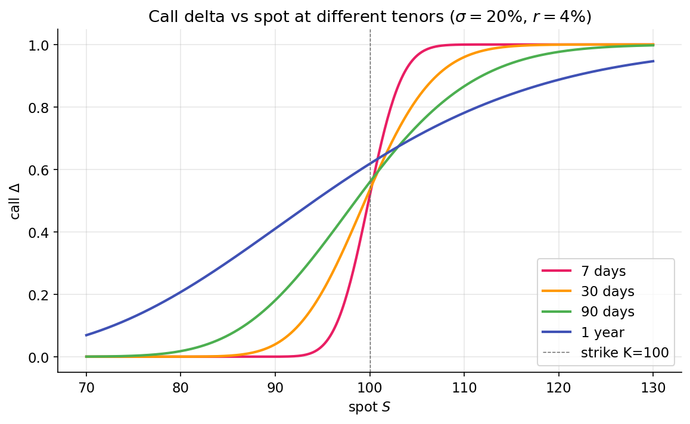

Delta — sensitivity to price¶
The Black-Scholes derivation produced a hedging portfolio \(\Pi = C - \Delta S\) whose first-order risk cancels. The coefficient \(\Delta\) — the partial derivative of option value with respect to the underlying — is the single most important number in options trading. It is a measurement of exposure, a hedge ratio, and a rough probability of exercise, all at once.
The definition¶
Delta is the dollar change in the option's value per $1 move in the underlying. It is a rate — at a specific \(S\), for small moves. For a European call under Black-Scholes:
so \(\Delta \in (0, 1)\). For a European put (via put-call parity):
so \(\Delta \in (-1, 0)\).
A call's price rises when the underlying rises, so its delta is positive. A put's price falls when the underlying rises, so its delta is negative. The magnitudes reflect how much of the underlying the option tracks.
The three regimes¶
Deep ITM: \(\Delta \to \pm 1\)¶
If a call's strike is well below current spot and expiry is not far off, the option is nearly certain to finish ITM. Its value at expiry will be \(S_T - K\), which moves dollar-for-dollar with \(S_T\). So \(\partial V / \partial S\) approaches 1. A deep-ITM call behaves like stock, minus a fixed obligation. Put-call parity says the same thing algebraically: \(C = P + S - Ke^{-rT}\); when \(P\) is tiny (deep ITM call = deep OTM put), \(\partial C / \partial S \approx 1\).
For a deep-ITM put, \(\Delta \to -1\). The position moves inverse to stock, one-for-one.
Deep OTM: \(\Delta \to 0\)¶
If the call is far out of the money and close to expiry, small moves in \(S\) barely change the probability of finishing ITM. The option is dominated by the (small) time value of a long-shot event. \(\partial V / \partial S\) approaches zero. The option is nearly insensitive to small moves.
ATM: \(\Delta \approx 0.5\) for a call, slightly above¶
When \(S = K\) and there's a decent amount of time left, the call has roughly a 50% chance of finishing ITM (in risk-neutral terms, via \(N(d_2)\)), and delta is roughly 0.5 — but not exactly. For a call with positive time to expiry and non-zero vol, \(d_1 > d_2\), so \(N(d_1) > N(d_2)\). An ATM call usually has \(\Delta\) in the neighborhood of 0.52–0.55. The extra fraction comes from the asymmetry of upside vs downside payoffs (your call benefits from upside unboundedly but loses at most its premium on downside).
Plotted across a range of spot for several tenors, the three regimes are a single smooth curve — an S-shape that flattens as expiry shortens (7-day has the sharpest transition through the strike; 1-year is diffuse):

Delta as hedge ratio¶
The Black-Scholes derivation already built this in: the portfolio \(\Pi = C - \Delta S\) is locally riskless. Interpretation: if you own one call, its exposure to the underlying is equivalent to owning \(\Delta\) shares of the underlying. To neutralize that exposure, short \(\Delta\) shares.
A worked example. You own 10 SPY calls with strike \(\$450\), expiry in 30 days, when SPY is at \(\$450\). Each contract covers 100 shares (the U.S. equity option multiplier). The call delta is 0.53 at these parameters.
- Position delta: \(10 \text{ contracts} \times 100 \text{ shares/contract} \times 0.53 = 530\) share-equivalents.
- Delta hedge: short 530 shares of SPY.
- Net position today: delta-neutral — the portfolio's P&L is (approximately) zero for small moves in SPY.
The phrase "delta-neutral" is slightly misleading. A delta-hedged portfolio is not profit-neutral; it is first-order-neutral. Second-order sensitivity (gamma, covered next) remains, and over time theta (time decay) chips at the value. The whole point of the hedge is to isolate those second-order effects and trade them independently — "I want exposure to vol, not direction." Short selling shares against a long call strips out direction; what remains is a vol bet.
Delta as probability, with a caveat¶
Traders often quote "delta" as "probability of finishing ITM." This is approximately true but not exactly. From the Black-Scholes formula,
\(\Delta\) equals the probability only in the limit of zero vol or zero time. For a 30-day option with \(\sigma = 20\%\), \(\sigma \sqrt{T} \approx 0.058\), and the gap between \(N(d_1)\) and \(N(d_2)\) is small. For a LEAPS option (multi-year expiry), the gap widens — \(\sigma\sqrt{T}\) can be 0.4 or more, and delta can overstate probability by many percentage points.
A trader saying "this 30-delta call has a 30% probability of expiring ITM" is close enough for most day-to-day intuition but wrong enough to matter for long-dated positions. Think of delta-as-probability as "a useful lie for short-dated options."
Delta-one products¶
Anything that moves one-for-one with the underlying has \(\Delta = 1\). The underlying itself trivially does. Futures on the underlying approximately do (subject to cost-of-carry adjustments). ETFs that track the underlying do, to within tracking error. "Delta-one" desks at banks trade these products — baskets and swaps whose risk profile is pure directional exposure, no convexity.
This is also why writing a covered call (long 100 shares + short 1 call) produces a net delta of \(1 - \Delta_\text{call}\): the long stock contributes \(+1\) per share (so \(+100\) on 100 shares), and the short call contributes \(-100 \times \Delta_\text{call}\). Net is \(100(1 - \Delta_\text{call})\) share-equivalents — reduced upside exposure, fully retained downside exposure (until the call expires).
Delta is not constant¶
The rest of Part 3 follows from one observation: delta is a function of \(S\), \(t\), and \(\sigma\). As the underlying moves, delta changes. As time passes, delta changes (even at fixed \(S\)). As vol moves, delta changes. Each of these sensitivities is itself a Greek.
- \(\partial \Delta / \partial S = \Gamma\) — next lesson, the most important second-order sensitivity.
- \(\partial \Delta / \partial t\) — charm; small but non-zero, matters on expiry Fridays.
- \(\partial \Delta / \partial \sigma\) — vanna; links delta to vol shifts, matters for vol surface reshaping.
A delta hedge that was correct at \(t_0\) is no longer correct at \(t_0 + dt\). That's why market makers rebalance continuously (in theory) or frequently (in practice). The accumulated P&L of a delta-hedged position is not zero — it depends on realized vs implied vol, which is the gamma-scalping story in the next lesson.
What you can now reason about¶
- Why deep-ITM calls trade like stock and deep-OTM calls barely move — delta ranges from 0 to 1 smoothly.
- How a market maker quoting a call knows how many shares to short to neutralize directional risk in a single number.
- Why "delta ≈ probability of ITM" is useful shorthand for short-dated options but breaks for long-dated ones — the \(\sigma\sqrt{T}\) gap between \(N(d_1)\) and \(N(d_2)\) widens.
Implemented at¶
trading/packages/gex/src/gex/greeks.py:52 — bs_delta_call(spot, strike, rate, sigma, tenor_years) returns \(N(d_1)\), vectorized over strikes and sigmas. It's used in the 25-delta skew computation (Part 4): given a target delta like \(0.25\), the skew module inverts to find the strike whose call has that delta, then reads the IV at that strike. The delta-to-strike inversion is the thing bs_delta_call enables.